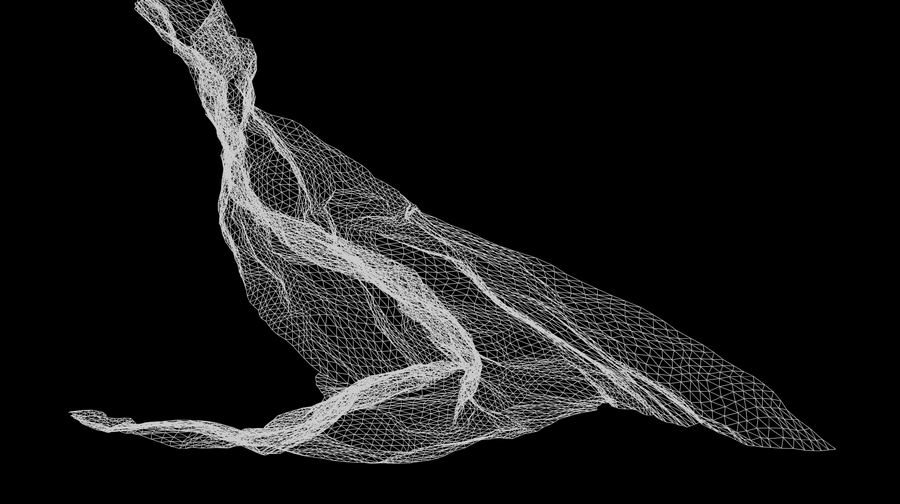
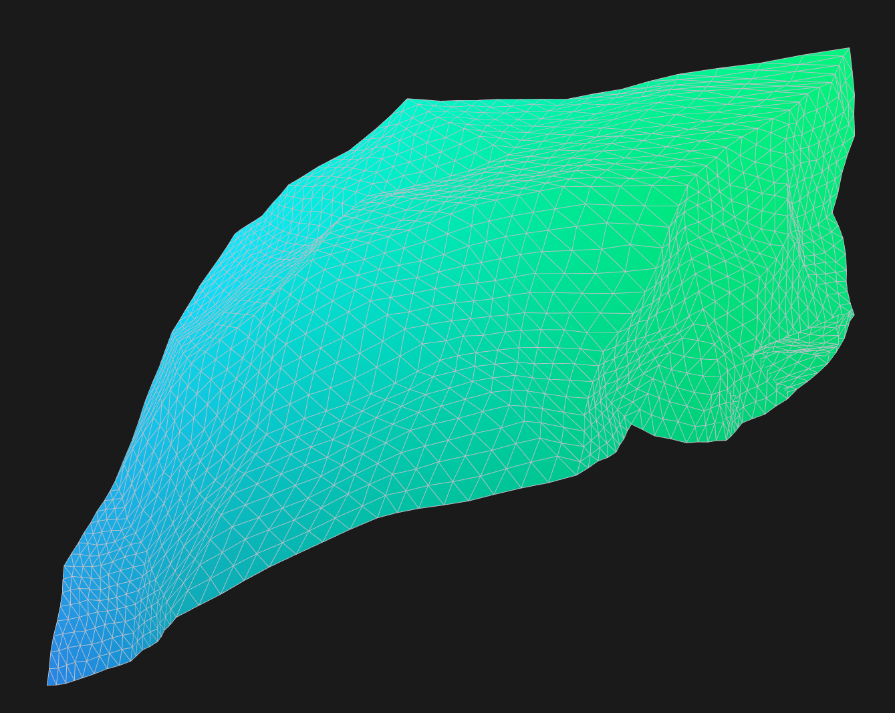
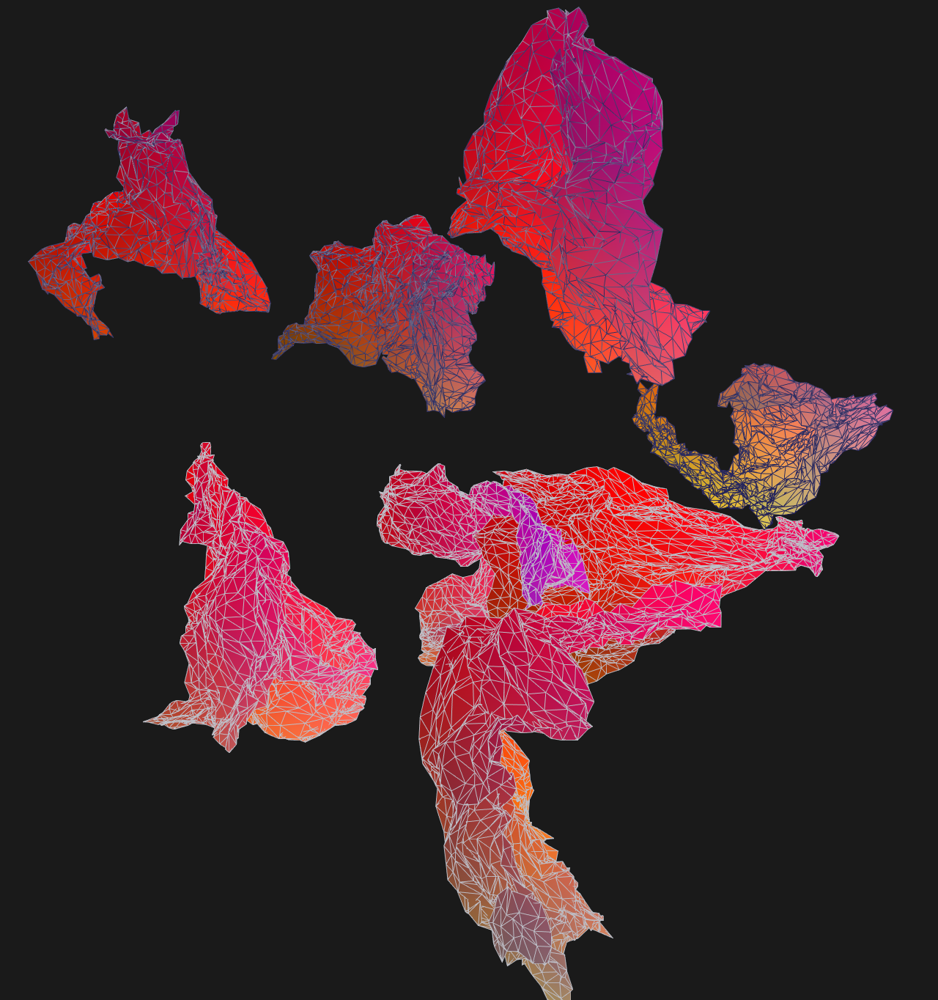

A 3D application developed for a Computer Graphics course, exploring iterative midpoint displacement in three dimensions.

The algorithm uses simple iterative midpoint displacement. When implemented in 2D, the resulting geometry resembles a fractal landscape. Below is a 2D implementation:

Extending this to 3D yielded results more reminiscent of crumpled cloth than terrain. By tuning parameters, some interesting effects emerge:

